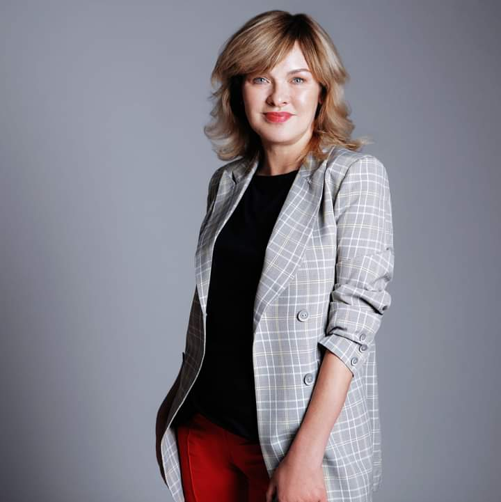
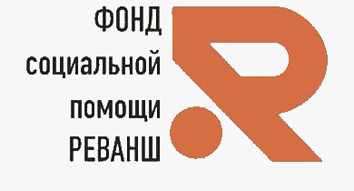
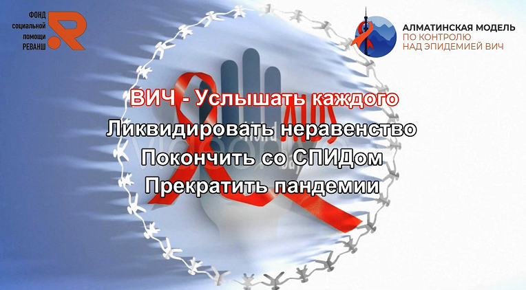
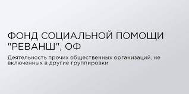

"Наши проекты – интересные и очень нужные. Они направлены на профилактику раннего сиротства через укрепление детско-родительских взаимоотношений, повышение правовой грамотности, развитие лидерства, снижение стигмы и дискриминации, повышение приверженности к АРВ-терапии, профилактику передачи ВИЧ от матери к ребенку. Мне нравится то, чем я занимаюсь сегодня. Я люблю видеть позитивные изменения в жизни людей. Мне приятно доставлять радость, оказывать поддержку тем, кто в ней остро нуждается, и делать окружающую действительность хоть немного лучше."
-Руководитель фонда, Билоконь Елена Александровна

Общественный Фонд социальной помощи "Реванш"
-
Миссия
Наша главная миссия – обеспечение безбаръерного доступа к медицинским услугам и социальным программам людям из уязвимых групп населения, социально-незащищенных слоев населения.
-
Целевые группы
- лица, вышедшие из мест лишения свободы
- люди, употребляющие наркотические вещества и их окружение
- воспитанницы детских домов
- женщины с детьми, находящиеся в трудных жизненных ситуациях.
-
Комплекс услуг
- Оформление ЭЦП
- восстановление социального статуса
- прикрепление к поликлинике
- социальное сопровождение
- юридическая поддержка
- профессиональная помощь психолога
- предоставление временного жилья
- экспресс тестирование на ВИЧ статус.
Также существуют возможность посещения группы взаимопомощи, более того ведется консультирование «Равный равному» - уникальная профессия, которой нет в Кодексе РК, направленные на решение социально-значимых проблем.
Наша деятельность



ОФ Реванш при поддержке "UNFPA"

Возможно ли начать жизнь заново?
Однозначно, да!